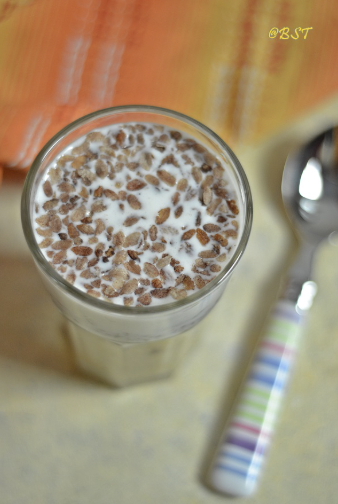

Home
Avil Milk Recipe

Steps
-
Chill the milk before use. You can use pasteurized or boiled whole milk.
-
Dry roast the avil(poha) in a pan until it's nice and crisp without
adding any oil or ghee. May take 2-3 minutes on low flame, keep aside.
-
Peel and mash the ripe bananas in a bowl with a fork. Add granulated
sugar and mix well.
- Dry roast the peanuts and peel the skin off once cooled.
-
To a tall glass, add 2-3 tbsp of mashed banana mix, add roasted avil and
roasted peanuts. To this add tutty fruity. Finally, pour in chilled
milk. Add again the roasted avil and peanuts. Add tutty fruity for
garnish and sprinkle half of a sachet of boost powder.
- Serve immediately. Mix with a spoon and enjoy.